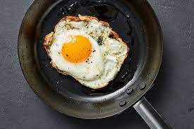

Fried Eggs

Fried eggs are an quick, easy, and delicious to make food for anytime of the day. They can be made in less than 10 minutes and when made properly, they are perfectly crisp with a runny yolk. They have been one of my favorite breakfast foods for a long time and today I will teach you how to make them
Ingredients:
- 1-3 Eggs
- 1 tbsp Peanut Oil
- Salt and Pepper To Taste
Instructions:
- Put pan on stove and add oil into pan. Then turn heat to medium high. Wait 2-3 mins for oil to heat up
- Once oil has been heated up, crack eggs directly into pan. Cook until egg white turns completely solid.
- Add salt and pepper on egg.
- Enjoy!
Back to home